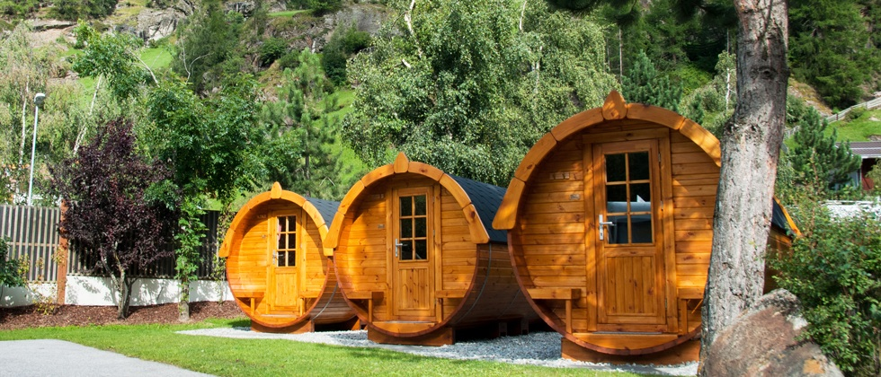

Herzlich Willkommen
Auf der Suche nach einem Erlebnis der etwas anderen Art? Dann sind Sie bei uns genau richtig. Bei uns übernachten Sie in einem von drei Schlaf-Fässern, welche jeweils Platz für zwei Personen bieten. Wählen Sie einfach ihren Wunschtermin und das Package, welches Ihren Wünschen entspricht, aus und schon kann ein erlebnisreicher Aufenthalt auf unserem Weingut beginnen.
Aufgrund der hohen Nachfrage kann pro Person und Tag nur ein Fass gebucht werden. Ebenfalls bieten wir im Moment nur Aufenthalte von einer Nacht an. Längere Buchungen können wir leider nicht entgegen nehmen. Wir bitten um Verständnis.